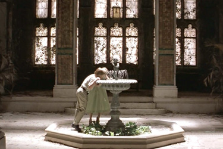
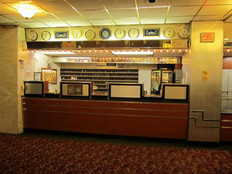

Cà d'Zan (Paradiso Perduto)

Hempstead House (Fountain Court)
| Character | Actor |
|---|---|
| Arthur Lustig (Abel Magwitch) | Robert De Niro |
| Young Finn (Pip) | Jeremy James Kissner |
| Joe Coleman (Joe Gargery) | Chris Cooper |
| Maggie (Mrs Joe) | Kim Dickens |
| Ms. Nora Dinsmoor (Miss Havisham) | Anne Bancroft |
| Young Estella | Raquel Beaudene |
| Jerry Ragno (Jaggers) | Josh Mostel |
| Finnegan "Finn" Bell (Philip "Pip" Pirrip) | Ethan Hawke |
| Estella | Gwyneth Paltrow |
| Walter Plan, Estella's husband | Hank Azaria |
| Erica Thrall | Nell Campbell |
| Owen | Gabriel Mann |
| Carter Macleish | Stephen Spinella |
| Role | Person |
|---|---|
| Director | Alfonso Cuarón |
| Screenplay | Mitch Glazer |
Cà d'Zan, an historic residence in Sarasota, Florida, was used for the exterior and parts of the interior of Paradiso Perduto. The mansion was built in 1924 by Mable and John Ringling. The façade was dressed to appear decrepit and overgrown, a gate was added to the avenue approaching the front, and the interior ballroom and loggia facing the waterfront terrace were also dressed for the dancing scenes.
Bradenton, Florida - Cortez Road and Sarasota Bay - was used for the approach and gardens of Paradiso Perduto.
Hempstead House on Long Island, NY was used for the interior fountain court of Paradiso Perduto.
When Finn moves to New York he stays in a drab apartment - the Hotel Carter was used for this.
The Harry F. Sinclair House at East 79th St. and 5th Avenue in Manhattan acted as the exterior for Ms. Dinsmoor's New York mansion.
Cà d'Zan (Paradiso Perduto)

Hempstead House (Fountain Court)

Hotel Carter check-in desk
Harry F. Sinclair House